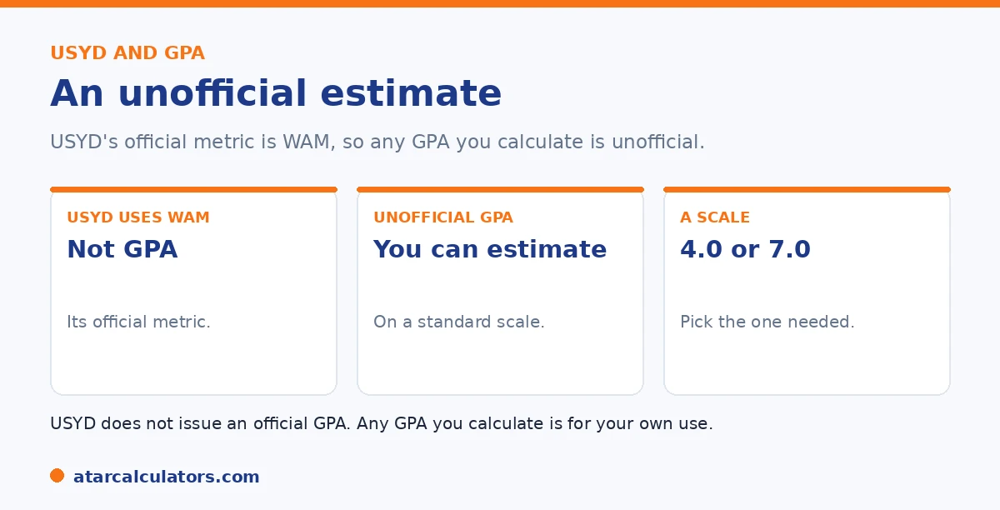

Here is the short version. And the important part first. The University of Sydney uses the WAM, or Weighted Average Mark, as its official measure, and does not issue or calculate a GPA. If you need a GPA, for example for an overseas application, you can estimate an unofficial one. Convert each mark to grade points on a standard scale, weight each by its credit points, add them up, then divide by total credit points. The result is indicative only.
Many students search for their USYD GPA, but there is a catch worth knowing before you start. Sydney does not actually use a GPA at all.
Below is how to estimate an unofficial GPA, and what it does and does not mean. For Sydney's actual measure, see our guide on whether USYD uses WAM or GPA.
Key takeaways
- Sydney uses the WAM, not a GPA, as its official measure.
- It does not issue or calculate an official GPA.
- You can estimate an unofficial GPA if you need one.
- Convert each mark to grade points on a standard scale.
- Weight by credit points, then average.
- The result is indicative only, not an official figure.
Sydney uses the WAM, not a GPA
Start with the key fact. The University of Sydney uses the WAM as its official academic measure. It does not issue or calculate a GPA. So there is no official Sydney GPA to look up.

If an application asks for a GPA, Sydney's own advice is to contact the organisation asking for it, to use their conversion method. But you can still estimate one yourself, as a guide. See our guide on the Sydney grading system.
Step one: convert marks to grade points
To estimate a GPA, first convert each unit's mark into grade points. On a common 7-point scale, each Sydney grade maps to a value, like this.
| Grade | Mark range | Grade points (7-point) |
|---|---|---|
| High Distinction (HD) | 85 to 100 | 7 |
| Distinction (D) | 75 to 84 | 6 |
| Credit (CR) | 65 to 74 | 5 |
| Pass (PS) | 50 to 64 | 4 |
| Fail (FA) | 0 to 49 | 0 |
Sydney uses these grades with the WAM. The grade points shown are for an unofficial GPA estimate on a common 7-point scale, not an official Sydney figure.
So a high distinction is worth 7 points, a distinction 6, and so on. Note these grade points are for an unofficial estimate, not a figure Sydney uses. Some applications use a 4-point scale instead, so check which is wanted.
Step two: weight and average
Next, weight each unit's grade points by its credit points, just as a WAM is weighted. Multiply each unit's grade points by its credit points, add all of those together, then divide by your total credit points.
The result is your estimated GPA, on whichever scale you used. It is the same weighting idea as a WAM, applied to grade points instead of marks. See our guide on how a WAM is calculated.
Want an indicative GPA estimate?
Try the USYD GPA calculator →Remember it is indicative only
This matters, so it is worth repeating. Any GPA you work out for Sydney is an unofficial estimate. Sydney does not issue it, and a different organisation may convert your marks differently.
So use the estimate as a rough guide, for your own sense of where you stand or to fill a form that demands a number. For anything formal, ask the organisation requesting it how they want your Sydney results converted.
It is worth being clear about why any GPA you calculate for Sydney is only indicative. This is because treating an estimate as official can cause real problems. Sydney's working measure is the WAM. So it does not issue a GPA of its own. Any GPA is a conversion you or someone else applies to your marks, using a chosen grade scale. And grade scales are not universal. Seven-point and four-point versions are both in use, and different organisations map marks to points differently. So the same transcript can produce more than one GPA depending on whose method is used. That is exactly why a homemade figure should never be submitted as though it were authoritative. The estimate is genuinely useful for informal purposes, getting a rough sense of where you stand, or entering a ballpark where a form insists on a GPA field. But for anything that carries weight the correct step is to ask the body requesting it how they want your Sydney results expressed. Overseas institutions and credential-evaluation services apply their own methodology and will tell you what they need. Domestic programs that ask for a GPA usually specify the scale. In short, calculate a GPA for your own orientation if it helps. Keep tracking your WAM as the figure Sydney actually uses. For any formal requirement, defer to the assessing organisation's conversion rather than your own.
What to use instead
For most purposes at Sydney, your WAM is the figure that counts. It is what is used for honours, scholarships, prizes, and ranking. So if you are gauging your own performance, focus on your WAM.
Reserve the GPA estimate for situations that specifically ask for a GPA, often overseas applications. See our guides on a good result at Sydney and the distinction average.
A worked USYD example
Suppose you take four units. You earn a High Distinction (7) in a 6-credit-point unit, a Distinction (6) in a 6-credit unit, a Credit (5) in a 12-credit unit, and a Pass (4) in a 6-credit unit.
Multiply and add: (7×6) + (6×6) + (5×12) + (4×6) = 42 + 36 + 60 + 24 = 162. Your total credit points are 6 + 6 + 12 + 6 = 30. So your estimated GPA is 162 ÷ 30, which is 5.4, a solid credit-to-distinction average.
Treat the result as an estimate
Remember that USYD does not issue an official GPA, so any figure you calculate this way is an unofficial estimate. It is a reasonable representation of your USYD performance in GPA terms, but it is not a number USYD itself certifies.
For USYD’s own honours, awards and progression, your WAM is the official measure. Use your GPA estimate for external applications that require one, and lead with your WAM for anything at USYD.
Common questions
How do I calculate my USYD GPA?
First, know that Sydney uses the WAM and does not issue a GPA. To estimate an unofficial one, convert each mark to grade points on a standard scale, weight each by its credit points, add them up, then divide by total credit points.
Does the University of Sydney use a GPA?
No. Sydney uses the WAM, or Weighted Average Mark, as its official measure, and does not issue or calculate a GPA. Any GPA you work out is an unofficial estimate, so a different organisation may convert your marks differently.
What grade points does USYD use?
Sydney does not use grade points officially, since it uses the WAM. For an unofficial GPA estimate on a 7-point scale, a high distinction is often counted as 7, a distinction 6, a credit 5. And a pass 4. Some applications use a 4-point scale.
Is a USYD GPA official?
No. Sydney does not issue an official GPA, so any figure you calculate is indicative only. If an application asks for a GPA, Sydney advises contacting that organisation to use their conversion method for your marks.
What should I use instead of a GPA at USYD?
Your WAM. It is Sydney's official measure, used for honours, scholarships, and ranking. Reserve a GPA estimate for situations that specifically ask for a GPA, such as some overseas applications, and treat it as indicative.
Estimate your USYD GPA
Get an indicative GPA from your Sydney marks and credit points. Free, and no signup.
Open the USYD GPA calculator →Related guides
This guide is general information for students, not formal academic advice. The University of Sydney's official academic metric is the WAM, and it does not issue or calculate an official GPA. Any GPA you work out is an unofficial estimate for your own use. Grade bands and honours requirements can vary by faculty and change over time, so always confirm with the University of Sydney directly. Reviewed by the ATARCalculators Editorial Team.